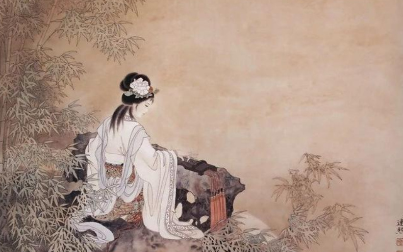

生平
早期：
- 李清照出生于书香门第，早期生活优裕。
- 其父李格非藏书甚富，她小时候就在良好的家庭环境中打下文学基础。
- 母亲王氏系出名门，高祖王景图、曾祖王赞，都荣登进士
婚姻：
- 建中靖国元年（1101年），李清照18岁，与长她三岁的金石学家赵明诚结婚。
- 夫妻二人前期生活安定优裕
- 词作多写闺阁之怨或是对出行丈夫的思念，如《一翦梅》：「此情无计可消除，才下眉头、却上心头」。
- 1107年移居青州。
- 1127年金兵攻陷青州，李清照与丈夫南渡江宁
南渡后的生活：
- 1129年，赵明诚独自前往就任湖州知事。
- 1131年三月，在土民钟氏之家，一夕书画被盗。
- 当年与丈夫收集的金石古卷，全部散佚，令她饱受打击，前后经历了国破家亡、暮年飘零后，感情基调转为凄怆沉郁
- 写作转为对现实的忧患，如《声声慢》“寻寻觅觅，冷冷清清，凄凄惨惨戚戚”。
晚年：
- 孤寡再嫁官右承务郎、监诸军审计司官吏张汝舟
- 张汝舟的婚姻图谋完全是出于对李清照藏品的贪婪
- 结婚不久随即离婚，甚至因此闹上公堂
- 她的诗词创作更加凝重，表达了对失去亲人和故土的深深思念与悲痛
- 她的词中反映了她当时的愁苦心情，如《武陵春》“风住尘香花已尽，日晚倦梳头。物是人非事事休，欲语泪先流”
